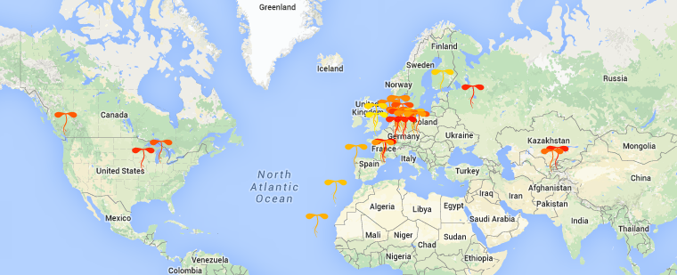
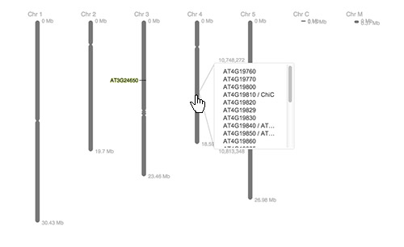

-
Basics
-
How do I load multiple genes?
You can load several genes at the same time if you separate them, with, commas, like this:
You can also paste a comma separated list into the box. Performance depends on how beefy a computer you're using. Contemporary laptops can handle about 25 genes without too much lag. Take five deep breaths while ePlant downloads the data.
-
I don't know the name of the gene I'm looking for.
The Expression Angler tool will automatically find genes that match any expression profile that you define.
There are three ways to use this tool:
Option 1. Find genes with similar expression patterns to a gene you're interested in.
Option 2. Find genes with similar expression patterns to a gene you're interested in, but only focus the search to particular tissues.
Option 3. Define your own expression pattern and search for genes that match it.
-
Why can I only load Arabidopsis genes?
ePlant was designed to be species agnostic. We are applying for funding to add more species. Let us know if there is a particular species we should target.
-
Visualization Tools
-
Heat Map Viewer
The Heat Map Viewer displays the expression levels for 350+ samples for all genes that are loaded. This is an efficient way to get an overview of both expression levels and specificity of expression patterns.

The image above displays ten genes with similar expression patterns to At3g24650 ABI3 (you can do this with the Expression Angler). Each row contains the expression levels for 350+ experiments for a given gene. Each column represents a particular experiment or tissue. Hover over any of the heatmap cells to see what it represents. Click on a sample to zoom directly to the associated eFP viewer.
-
World eFP Viewer / Natural Variation Viewer
The World eFP Viewer displays natural variation in gene expression from ecotypes collected from around the world. It draws tiny plant shoots that are colored according to their expression level for a given gene, and placed according to the geographic coordinates of their source on a Google Maps image of the world. You can zoom in and out using the Google zoom controls for a closer view.

This chart displays the natural variation in gene expression of At1g10320, a Zinc finger C-x8-C-x5-C-x3-H type family protein. Click on the Citation link to see the source of these data.
-
 Plant eFP Viewer
Plant eFP Viewer
The Plant eFP Viewer is an electronic flurorescent pictograph that displays gene expression patterns on the tissues of a cartoon plant. Stronger colors denote a higher level of expression.
This chart displays the expression pattern for At1g01040, also known as ASU1, ATDCL1, CAF, DCL1, EMB60, EMB76, SIN1, and SUS1, a gene encoding a dicer-like 1 protein. Note that it is expressed everywhere but in the mature pollen.
This is a new implementation of the Arabidopsis eFP Browser at bar.utoronto.ca (Winter et al., 2007. PLOS One 2(8) e718). This version was written with Javascript and runs in your browser. No more waiting to download a new image every time you adjust a parameter. It also uses SVG images to generate anti-aliased lines that can scale up to any size. Unecessary outlines around the shapes have been removed to maximize the data/ink ratio.
-
Experimental and Tissue Specific eFP Viewer
The Experimental and Tissue Specific eFP views provide a graphical display of gene expression levels after exposure to stress, hormone, or other treatments, and in tissues not included in other views. Experimental data currently include:
Guard and Mesyphyl Cell
Microgametogenesis
Root
Stigma and Ovaries
Chemical Experiment
Abiotic Stress Experiment
Xylem and Cork
Guard Cell Suspension Cell ABA Response with ROS
Stem Epidermis
Guard Cell and Mutant Wild Type Guard Cell
Pollen Germination
Guard Cell Meristemoids
Shoot Apical Meristem
Click on the Citations link in each view for the data source reference. We are hoping to add more views soon. Please contact us if you have data that you'd like to share.
-
Cell eFP Viewer
The Subcellular eFP Viewer displays the documented and predicted subcellular localization of a gene product on a cartoon image of a cell.
This chart shows the subcellular localization for At3g24650, which encodes the transcription factor ABI3. Nuclear localization has been documented for this TF.
-
 Chromosome Viewer
Chromosome Viewer
This view provides a pictographic overview of the entire genome, displaying each of a plant's chromosomes as a series of vertical bars. It also indicates the chromosomal positions of all the genes that have been downloaded.

You can also load data by hovering over the chromosomes and selecting a gene from the popup that lists all the genes at that position, then clicking the 'Get Data' button in the popup once you select a gene.

The thermometer icon in the toolbar generates a heat map indicating the density of genes along the chromosome.
-
 Protein Interactions Viewer
Protein Interactions Viewer
The Protein-Protein Interactions viewer displays documented and predicted protein-protein interactions for the selected gene product. This tool was written with Cytoscape.js, developed at the Donnolly Centre at the University of Toronto.
This is a chart of documented and predicted interaction partners for At1g01040. You can click on any of the gene products (nodes) to open an information popup. Click the 'Get Data' button to add the selected gene product to the gene/gene product panel.
-
 Molecular Structure Viewer
Molecular Structure Viewer
This view displays a 3D molecular structure of the selected gene's protein product from the Protein Data Bank, PDB, or predicted by Phyre. Pfam and CDD domains can be highlighted by selecting whichever domain you're interested in from a list. The amino acid sequence is displayed along the bottom of the screen. Hover over the sequence (or click on a base) to highlight that residue on the molecule.
This chart shows a 3D structure for an unknown protein. A CDD Globin_like superfamily is highlighted in light green. Clicking on the residues in the sequence along the bottom will highlight their position on the molecule. The first ten residues of the sequence are highlighted in darker green and their positions can be seen on the molecule with the amino acid side chains coming off them.
-
Sequence Browser
The Sequence Browser is a full featured genome browser that allows you to explore genes of interest from the individual nucleotide all the way up to their place in the genome. This is an implementation of JBrowse with data fed from Araport.org.
Click the tab on the side of the navigation bar to slide it out of the way.
-
Links to External Tools
Want to explore your gene of interest with other tools? ePlant will link you to the following websites with your already loaded gene/gene product of interest:
TAIR
GeneMANIA
Expressolog Tree Viewer at the BAR
Arabidopsis Interactions Viewer at the BAR
Cell eFP Browser at the BAR
SeedNet
Expression Browser at the BAR
-
Features
-
What is RSVP?
Identifying genes of interest can be a daunting and time-consuming task. To be successful, researchers must find subtle differences between nearly identical electronic fluorescent pictographs (eFP images). A display technique called Rapid Serial Visual Presentation (RSVP) could improve the experience by exploiting our ability to recognize differences between images when they are flashed on a screen in a rapid and serial manner. ePlant offers two RSVP display modes: "Hover" and "Slide Show".
When the "Hover" RSVP mode is selected and turned on, you can rapidly update the display window by hovering your mouse over the items in the gene panel.
When one of the "Slide Show" RSVP modes (fast, medium, or slow) is selected and turned on, the display window automatically steps through each of the downloaded genes at a rapid pace.
We have a forthcoming paper reporting an 80-person user study comparing four different methods of controlling an RSVP display for visual search tasks. We found the "Hover" RSVP method has significant performance benefits over a traditional "Point and Click" interface in terms of identifying patterns of interest.
-
How do I sort the genes I have downloaded?
You can sort genes in the gene panel by clicking these buttons:
The sort function automatically orders genes according to their maximum expression level. The left button sorts high-to-low, the right button sorts low-to-high. You can also drag genes to re-order them manually.
This may be useful if you want to organize the genes you have downloaded.
-
How do I adjust the global options?
You can adjust the global options with the menu in the upper right corner:
"Zoom transitions" enables or disables the zooming transition effects between screens.
"Tooltips" enables or disables the green tooltips that appear when you mouse over the icons.
"Generate URL" creates a URL link that will restore your current ePlant session.
"View intrusions" enables or disables the information popups that appear the first time you open a data visualization view in a given session.
-
How do I make a screengrab of a particular view?
You can make charts suitable for publication by clicking on the camera icon in the toolbar. A popup will open with a PNG file of your current view, minus all the ePlant user interface bits and pieces. Right click on the image to save it, or simply drag it to your desktop.
-
How do I customize the color gradient of eFP images?
Don't like red/yellow? Click the painter's palette icon in the toolbar:
You can customize the color gradient for all the various eFP views. The other views (e.g., Interactions Viewer, Molecule Viewer, Sequence Browser) use their own color schemes.
The max color and zero color are used when viewing data in Absolute mode. All three colors (i.e., max, zero, min) are used when viewing data in Relative mode.
-
Where can I leave a comment?
The Comments button (in the bottom left corner) will open a feedback forum provided by Disqus. It's a public forum so please be nice.
-
Report a Bug
-
Found something we should know about?
Send an email to: jamie.waese@mail.utoronto.ca